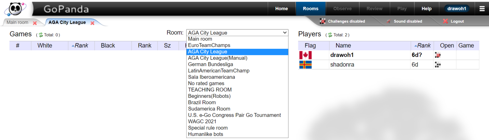

Room Tutorial
This picture shows where to select the correct playing room on GoPanda2. In the drop-down menu at the top, you can change the room to “AGA City League” for Leagues A–D, or “AGA City League (Manual)” for League E. Make sure you choose the correct room before your game starts.
这张图片展示了如何在 GoPanda2 中选择正确的对局房间。你可以在上方的下拉菜单中切换到 “AGA City League”（A–D 级使用）或 “AGA City League (Manual)”（E 级使用）。请在对局开始前确认你进入了正确的房间。
City League FAQs (for Toronto and Waterloo teams)
1. My opponent did not show up. What do I do?
If a game has been scheduled and one player is not present at the agreed start time, there is a 20-minute grace period. After 20 minutes, the absent player forfeits the game.
If your opponent does not show up, take a timestamped screenshot of the Pandanet lobby showing their absence.
Send this information to your team captain. If you already have the opposing team captain’s email, you may instead email the opposing team captain directly and cc your team captain. The team captain will forward the information to the Tournament Director as needed. If neither player is present at the agreed time and there is no valid reason, the game will be ruled a double forfeit.
2. How are match results recorded, what happens if a match ends 2–2, and how are ties in the standings broken?
Match score is the primary factor in rankings. A team’s match score reflects wins, losses, and ties for the team as a whole. Each match win counts as 2 points, a tie counts as 1 point, and a loss counts as 0 points. Match score is always considered before any tie-breakers.
Example: A team with 4 wins and 3 ties (11 points) is ranked higher than a team with 5 wins and 2 losses (10 points).
During the regular season, a match that ends 2–2 is recorded as a draw.
In A League finals and in any promotion or relegation matches, a 2–2 result is decided by Board 1. The team that wins on Board 1 wins the match.
If two or more teams have the same match score, ties in the standings are broken in the following order:
- Board Points
- Head-to-head result
- Board 1 wins
- Board 2 wins
- Board 3 wins
- Board 4 wins
Board Points are calculated as the total number of individual game wins across all rounds. Each game win is worth 1 Board Point. For example, a 2–2 match gives each team 2 Board Points.
3. What software should I use for the video call?
Players should meet on Pandanet at the scheduled time. You can use Pandanet private messages to agree on which video call software to use.
- Jitsi: Recommended for players without a paid Zoom account. No time limit. Works in a web browser and has a mobile app.
- Zoom (paid): No time limit.
- Skype or Google Meet: No time limits. Many players can use Google Meet through their Gmail accounts.
If you prefer not to sort out video call details on the day of the game, you may tell the Toronto team captain in advance that you would like to formalize the video call process ahead of time so the game runs more smoothly.
Additional webcam rules can be found here: Pandanet Webcam Rules
4. I reviewed the game using AI and believe my opponent cheated. What should I do?
Only players who participated in the game may file a formal complaint.
If you believe your opponent cheated in some way, such as using AI assistance or other prohibited methods, collect any supporting evidence, such as the SGF file. Players are strongly encouraged to record their required webcam or video call during the match, as a recording may be submitted as additional evidence if there are concerns about fair play or rule violations.
You must email the Tournament Director with your complaint and supporting evidence. If you do not know the Tournament Director’s email address, you may ask your team captain for assistance.
Complaints should be submitted early enough for the Tournament Director to respond before the next round is paired. Complaints submitted later may still be investigated, but they may not affect the next round pairings.
You may contact your team captain for help or guidance. However, under the current rules, the formal complaint must come from the player involved in the game. This document does not fully account for cases involving junior players, where it may be unreasonable for a child to submit a formal complaint on their own.
More details are available in the AGA Fair Play Online Go Tournament Rules and Procedures document
5. Where can I find the official rules for the City League?
The Official Rules Document contains the full tournament rules, including details that support the FAQs and provide answers to other common questions. Players are encouraged to review it to understand all aspects of tournament play.